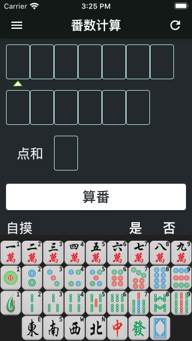
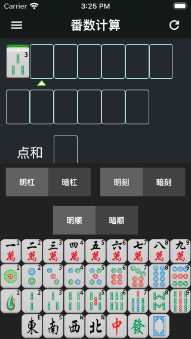
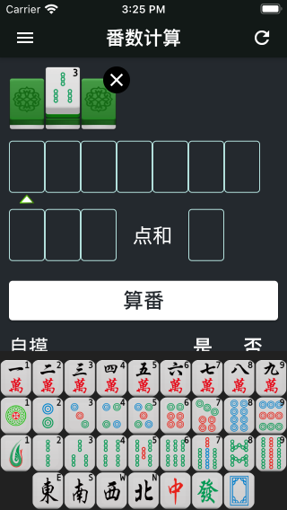

《麻将宝典》是一款根据世界麻将组织2014年修订版国际《麻将竞赛规则》进行编写的iOS/Android平台App，主要功能包括麻将计算番数、麻将教学、麻将测验等，后续版本会添加更多功能。
App Store下载链接：
App Store
Google Play下载链接：
Google Play
《麻将宝典》提供了简体中文、繁体中文、英文、日文和法文共5种不同的显示语言。 默认情况下，App将根据您的操作系统的语言设置，自动选择最佳显示语言。 当您希望切换到其他语言时，可以点击首页左上角的“≡”按钮，点击“偏好设置”，点击“更改语言”，然后在弹出的语言列表中进行选择，如下图。
要输入麻将，请首先点击界面上方的输入位置，此时被点击的位置下方会出现输入提示三角，同时键盘会自动弹出。 您可以通过键盘输入麻将，如下图。
对于暗杠、明杠、碰牌和吃牌的情况，请先输入第一张牌，然后点击键盘上方功能区中对应的功能按钮即可。 例如，如果想输入暗杠3条，首先在界面上方点击输入位置，然后在键盘中点击“3条”，最后点击键盘上方的“暗杠”按钮即可。
 再例如，要输入吃牌345万，首先在界面上方点击输入位置，然后在键盘中点击“3万”，最后点击键盘上方的“明顺”按钮即可，程序会自动补齐4万和5万。如下图所示。
需要注意的是，有些功能键在特殊情况下不可用，例如字牌（东南西北中发白）是无法吃牌的，所以此时不显示明顺、暗顺按钮。
当输入完成后点击“算番”按钮，App会开始计算番数并显示计算结果。如果输入有误，App会提示错误信息。
在“算番”按钮下方可以设置其他信息，如自摸、绝张、圈风和门风等。
点击页面左上角功能键将打开抽屉页，点击“番种定义”可以查看全部番种的详细定义。
点击抽屉页中的“意见与建议”可以以邮件形式反馈您的意见和建议，我会第一时间进行解答，感谢您的支持！
App作者：李朴之